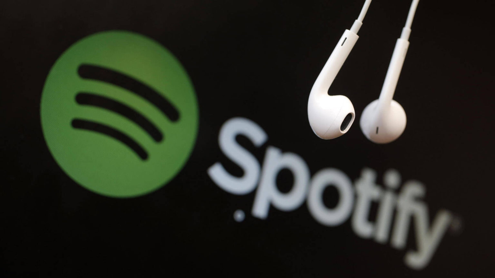

Spotify — интернет-сервис потокового аудио (стриминговый), позволяющий легально и бесплатно прослушивать музыкальные композиции, аудиокниги и подкасты, не скачивая их на устройство. Доступен в виде веб-сайта, приложений для всех операционных систем, смартфонов,
смарт-устройств и медиа-систем автомобилей.

На сервис приходится более 36% мирового аудиостриминга, он доступен в Америке, во всех странах Европы, некоторых странах Азии и Африки, в Австралии и Новой Зеландии.
Более 70% прослушиваний музыки происходит через плей-листы, а не по поисковому запросу или со страницы артиста.
С 2006 и до конца 2018 года компания являлась убыточной, она существовала на средства инвесторов и выплачивала больше авторских отчислений, чем зарабатывала.